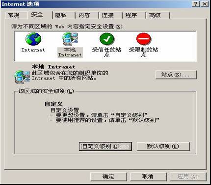
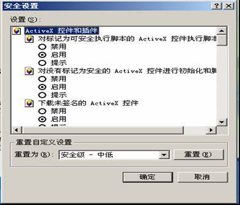

| 1.3 系统运行环境 |
1、基本要求
l Windows98/2000/XP/2003操作系统
l IE6.0或以上版本浏览器
l 分辨率要求1024*768或以上，最佳效果为1366*768
l IE浏览器要求取消广告拦截功能
l IE浏览器必须启用本地ActiveX权限
2、启用本地ActiveX权限
l 启动IE浏览器，选择“工具>>Internet选项”，弹出如图1-1所示窗口

l 分别选择“安全>>本地Intranet”、 “安全>>本地Intranet”选项，点击“自定义级别”按钮，弹出如图1-2所示窗口
